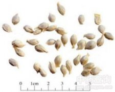

橘核

拼音
Jú Hé
别名
橘子仁（《婉僧坦集验方》），橘子核（《本草衍义》），橘米（《四川中药志》），橘仁（《药材学》）。
来源
本品为芸香科植物橘Citrus reticulata Blanco 及其栽培变种的干燥成熟种子。果实成熟后收集，洗净，晒干。
生境分布
主产福建、浙江、江西、四川等地。
药材特点
橘 常绿小乔木或灌木，高3-4m。枝细，多有刺。叶互生；叶柄长0.5-1.5cm，有窄翼，顶端有关节；叶片披针形或椭圆形，长4-llcm，宽1.5-4cm，先端渐尖微凹，基部楔形，全缘或为波状，具不明显的钝锯齿，有半透明油点。花单生或数朵丛生于枝端或叶腋；花萼杯状，5裂；花瓣5，白色或带淡红色，开时向上反卷；雄蕊15-30，长短不一，花丝常3-5个连合成组；雌蕊1，子房圆形，柱头头状。柑果近圆形或扁圆形，横径4-7cm，果皮薄而宽，容易剥离，囊瓣7-12，汁胞柔软多汁。种子卵圆形，白色，一端尖，数粒至数十粒或无。花期3-4月，果期10-12月。
性状
本品略呈卵形，长0.8～1.2cm，直径0.4～0.6cm。表面淡黄白色或淡灰白色，光滑，一侧有种脊棱线，一端钝圆，另端渐尖成小柄状。外种皮薄而韧，内种皮菲薄，淡棕色，子叶2，黄绿色，有油性。气微，味苦。
性味
苦，平。
功能主治
理气，散结，止痛。用于小肠疝气，睾丸肿痛，乳痈肿痛。
用法用量
3～9g。
化学成分
各种橘核都含脂肪油、蛋白质，其苦味成分为黄柏内酯和闹米林。
药理作用
1：无药理作用
摘录
《中国药典》